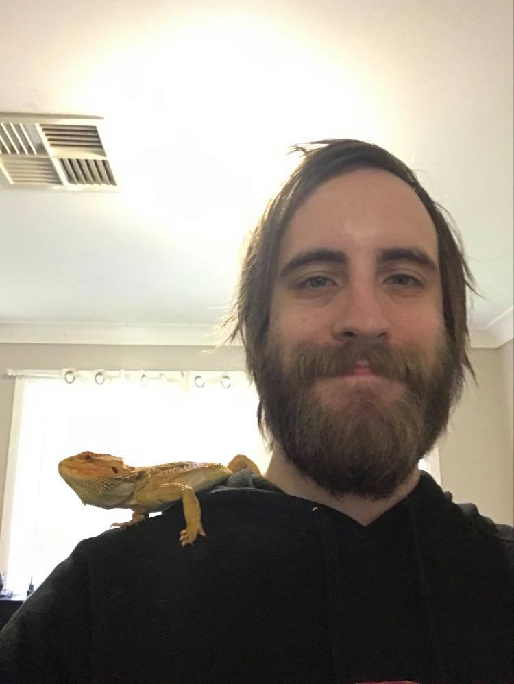
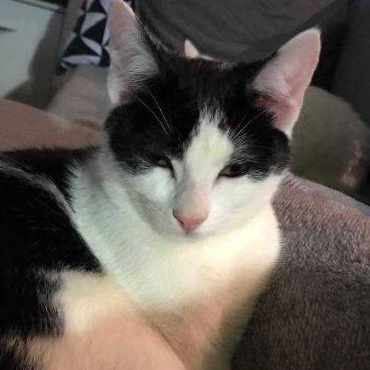
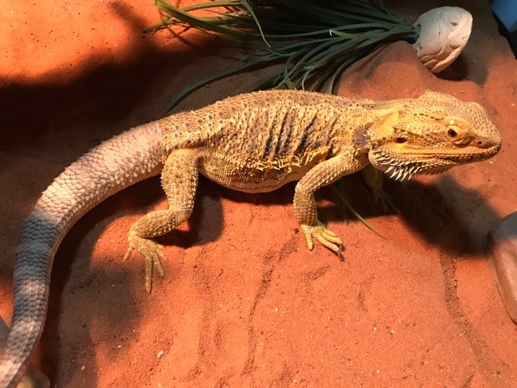
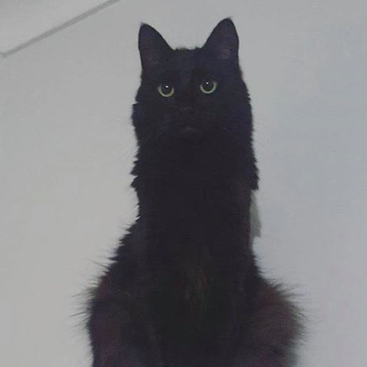
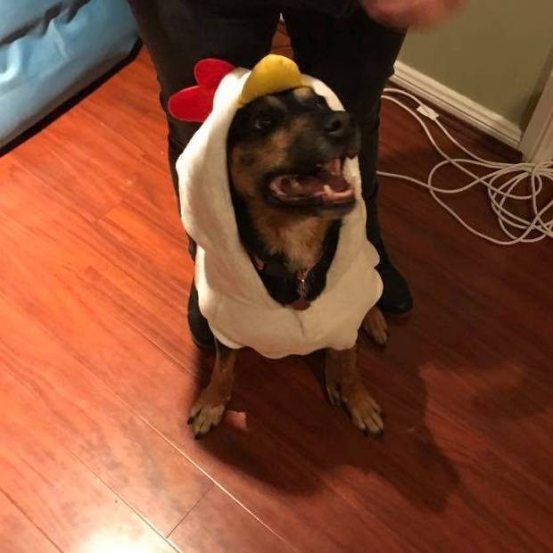
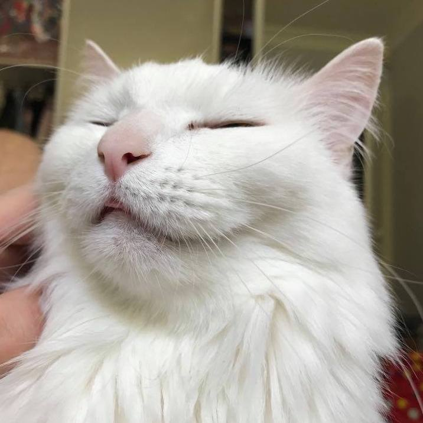

My name is Aidan and welcome to my portfolio.
I am a musician, songwriter, artist and a writer (with complete written works pending).
Although I am admittedly new to the world of fullstack development, many of my interests have aligned.
I am able to code in html and css. I am also skilled in utilising bash and managing projects through the use of git.
Feel free to have a look around. I have some art and music for your earholes and eyeholes.
Enjoy!
Aidan K





